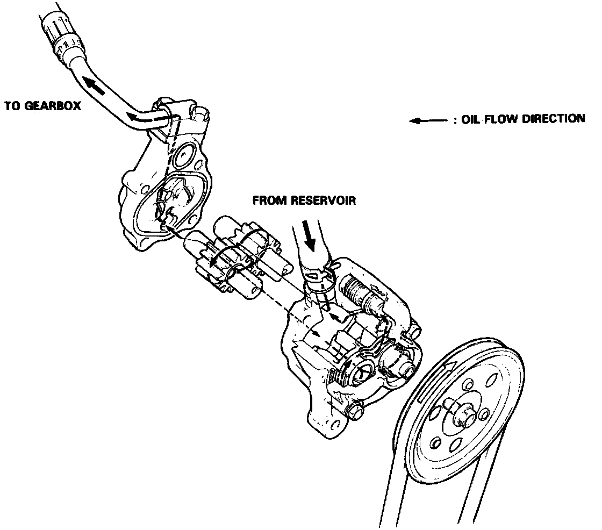
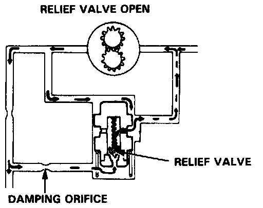
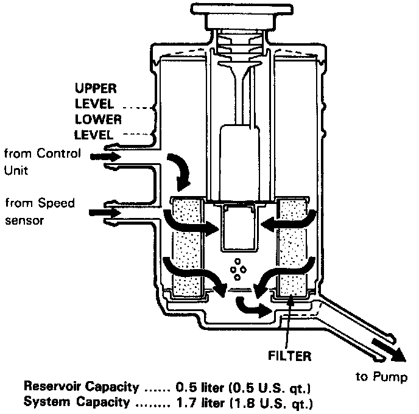

Power Steering Pump: Description and Operation

Pump
The power steering pump is mounted at the right upper right side of the engine and is driven by a V-belt from the crankshaft pulley. It uses a combination flow-control/relief valve to keep output pressure between 7839-8825 kPa (80-90kg/cm2, 1135-1280 psi). The pump is made of aluminum to reduce its weight and help it run cooler. It uses the a pressure balance system which allows fluid pressurized by the pump to flow behind two "floating" plungers, automatically maintaining the correct clearance between the other ends of the plungers, and the pump gears. This not only increases pump efficiency, but also improves durability, since the plungers can move to compensate for the expansion caused by high temperatures; otherwise the clearance would decrease, allowing more rapid pump wear.
Flow Control
Fluid from the pump runs through a metering orifice to the control unit. This creates a pressure difference between the pump and control unit sides of the orifice. When pressure in the pump side is higher than the force of the spring holding the flow control valve closed, it pushes the valve down (open), and excess fluid returns to the pump inlet. The combined effect of the metering orifice and the flow control valve provides a relatively constant flow of fluid to the control unit.

Pressure Relief
As pressure on the control unit side builds up it pushes the relief valve ball (inside the flow control valve) up against its spring, and excess fluid returns to the pump inlet. As the pressure under the flow control valve drops, the relief valve bail is closed by its spring, and the flow control valve is forced down again, allowing excess fluid from the pump side to return to the inlet. This flow control valve-relief valve cylinder keeps pump output pressure between 7845-8826 kPa (80-90 kg/cm2,1138-1280 psi).

Reservoir
A one piece reservoir and filter is attached to the fender apron on the left side of the engine compartment. The fluid and the filter/reservoir should be replaced if the system is opened for repairs, or if the fluid gets water or dirt in it.
CAUTION: Use only Honda Power Steering Fluid. The use of other fluids such as A.T.F., or other manufacturer's power steering fluid will cause damage to the system.